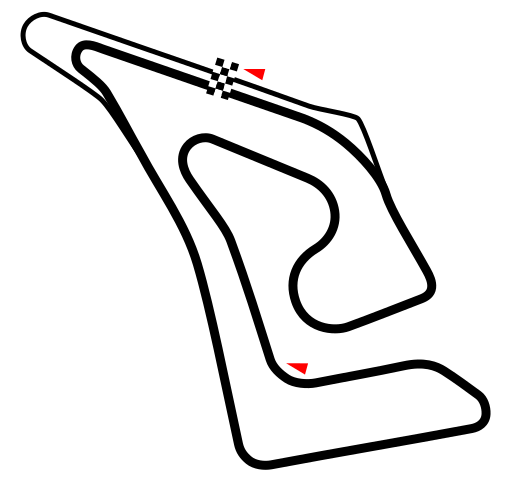
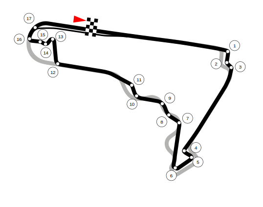
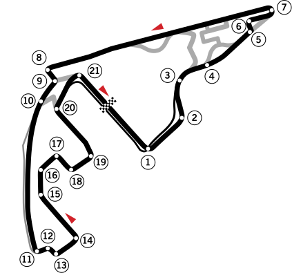

Bahrain

First Grand Prix: 2004
Circuit Length: 5.412 km
Num of Laps: 57
Saudi Arabia

First Grand Prix: 2021
Circuit Length: 6.174 km
Num of Laps: 50
Australia

First Grand Prix: 1996
Circuit Length: 5.278 km
Num of Laps: 58
Japan

First Grand Prix: 1987
Circuit Length: 5.807 km
Num of Laps: 53
China
First Grand Prix: 2004
Circuit Length: 5.451 km
Num of Laps: 56
Miami

First Grand Prix: 2022
Circuit Length: 5.412 km
Num of Laps: 57
Emilia-Romagna

First Grand Prix: 1980
Circuit Length: 4.909 km
Num of Laps: 63
Monaco

First Grand Prix: 1950
Circuit Length: 3.337 km
Num of Laps: 78
Canada

First Grand Prix: 1978
Circuit Length: 4.361 km
Num of Laps: 70
Spain

First Grand Prix: 1991
Circuit Length: 4.657 km
Num of Laps: 66
Austria

First Grand Prix: 1970
Circuit Length: 4.318 km
Num of Laps: 71
Great Britain

First Grand Prix: 1950
Circuit Length: 5.891 km
Num of Laps: 52
Hungary

First Grand Prix: 1986
Circuit Length: 4.381 km
Num of Laps: 70
Belgium

First Grand Prix: 1950
Circuit Length: 7.004 km
Num of Laps: 44
Netherlands

First Grand Prix: 1952
Circuit Length: 5.259 km
Num of Laps: 72
Italy

First Grand Prix: 1950
Circuit Length: 5.793 km
Num of Laps: 53
Azerbaijan

First Grand Prix: 2016
Circuit Length: 6.003 km
Num of Laps: 51
Sinagpore

First Grand Prix: 2008
Circuit Length: 4.940 km
Num of Laps: 62
United States

First Grand Prix: 2012
Circuit Length: 5.513 km
Num of Laps: 56
Mexico
First Grand Prix: 1963
Circuit Length: 4.304 km
Num of Laps: 71
Brazil

First Grand Prix: 1973
Circuit Length: 4.309 km
Num of Laps: 71
Las Vegas

First Grand Prix: 2023
Circuit Length: 6.201 km
Num of Laps: 50
Qatar

First Grand Prix: 2021
Circuit Length: 5.419 km
Num of Laps: 57
Abu Dhabi
First Grand Prix: 2009
Circuit Length: 5.281 km
Num of Laps: 58